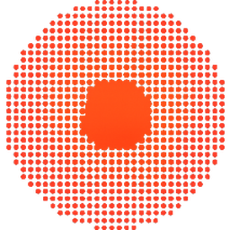
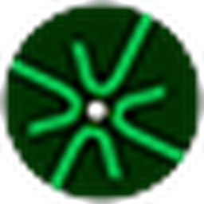

work
experience
-

finaldose (yc p26)ml engineer · 2026–nowmachine learning engineer intern, london
- trained a random forest to 0.852 auroc over 1,368 spcas9 positions under blocked cross-validation, beating the in-house baseline at 0.826 (paired-bootstrap 95% ci [+0.002, +0.046]) and prodomino, the state of the art, at 0.777.
- built the feature pipeline in python and numpy: mean-field direct-coupling analysis over a 5,254-sequence alignment, paired with coevolutionary graph-topology descriptors. bounded the ceiling near 0.88 and traced the wall to label noise, not the model.
- built a bayesian additive regression trees model with calibrated per-residue 95% credible intervals, and a covariate-shift check that abstains on the 13% of sites outside measured support.
python · numpy · scikit-learn · bart finaldose.ai ↗ bart code ↗
-
 georgia tech, brainml labml research · 2026–now
georgia tech, brainml labml research · 2026–nowmachine learning research assistant, dr. anqi wu’s lab
- built a training-time attribution method in pytorch (model stitching, lockstep shadow models) for a 642k-parameter pose transformer, lifting correct stage attribution from 0.69 to 0.95 (95% ci +0.12 to +0.44) on a pre-registered planted benchmark.
- showed that fine-tuning only the deepest stage raises attack f1 by 8.3% with no forgetting, while full-model training on the same clips cuts it 7%, reproduced on a second machine within a 31-hypothesis pre-registered study.
- built an fft-basis lasso surrogate searching 10 billion training curricula on aws gpus, beating random search 1.9× on held-out data, and used hessian-vector products to show adam’s memory drives order effects (cosine 0.54 vs 0.00).
pytorch · scikit-learn · aws
-
emory, yang labgenomics · 2024–now
computational genomics research intern, dr. jingjing yang’s lab
- ran a bayesian variable-selection model with spike-and-slab priors over 1,647 multi-omic rosmap samples and 1,000+ hpc compute hours, recovering 26 alzheimer’s risk genes that three published cis-only methods missed.
- built the end-to-end gift fine-mapping pipeline across distributed slurm job arrays, integrating gwas summary statistics from 111,326 cases and 677,663 controls.
- first author on an abstract accepted to the ashg 2026 annual meeting.
r · slurm · gwas · twas lab ↗ gift code ↗
-
emory, roberts labproteomics · 2025–26
computational proteomics research intern, dr. blaine roberts’s lab · jul–dec 2025, may–aug 2026
- built a differential-expression pipeline in r over a sparse 34-patient als cohort, chaining tampor batch-effect normalization, random-forest imputation and empirical-bayes moderated tests under fdr control to recover power.
- deployed a distributed molecular dynamics pipeline on aws parallelcluster, fanning replicas across slurm gpu arrays with openmm and cuda under an amber ff19sb/opc force field at a 4 fs timestep.
- mapped 1,038 als and 1,628 alzheimer’s csf nitropeptide sites against the fragpipe search database, filtering to 506 and 479 high-confidence residues for conservation analysis.
r · python · openmm · aws als code ↗ md code ↗
-
bu school of medicinerise intern · 2025
research intern, rise neurobiology program · one of 130 high school researchers selected nationwide
- a multiscale systems-biology model of mbdnf and probdnf signaling: coupled odes across a closed-system neural network, simulating neuronal growth against apoptosis.
- a probdnf to mbdnf ratio of 7.1 is the bifurcation point for network-wide collapse; piecewise regression improves fit 38.9% over linear.
- accepted as a society for neuroscience late-breaking presentation.
odes · homology modeling · docking rise ↗
projects
-
eidolamemory app · 106 users
founder and sole engineer · mar 2026–now
- a multi-tenant memory app that grew to 106 active users: next.js and fastapi shipped through cloud build ci/cd to cloud run, row-level-security isolation, stripe billing, 149 rest endpoints, 103 test suites, and a 20.5k-line swift ios and watchos client.
- the rag layer: an hnsw index over 3,072-dim half-precision embeddings in postgres/pgvector, per-user hdbscan topic clustering, and answers streamed token by token over server-sent events.
- $25,000 in cloud credits from anthropic, google cloud and aws through y combinator startup school.
next.js · fastapi · pgvector · cloud run · swift eidola.me ↗
-
bgw-twas fine-mappingr · slurm
- predixcan, fusion and tigar read cis-eqtls only, and trans effects carry roughly a third of trait-associated gwas signal.
- spike-and-slab variable selection over 1,647 rosmap samples, then gift fine-mapping on slurm arrays against bellenguez gwas (111,326 cases, 677,663 controls).
- 26 alzheimer’s risk genes that three published cis-only methods missed.
-
cas9 insertion tolerancepython · bart
- for each of 1,368 spcas9 positions, predict whether an inserted folded domain leaves the enzyme working.
- coevolution features into a random forest under leave-one-block-out cross-validation, then a bart layer for per-residue 95% credible intervals that abstains on the 13% of sites outside measured support.
- 0.852 auroc against 0.826 in-house and 0.777 for prodomino. the ceiling sits near 0.88, and the wall is label noise.
python · scikit-learn · bart · dca code ↗
-
als spinal cord proteomicsr · limma
- nitro-tyrosine and nitro-tryptophan differential expression across the mceachin c9orf72 als spinal cord tmtpro set: 34 patients over two plexes.
- tampor normalization, a 50% missingness filter, random-forest imputation, then limma under bh-fdr across three contrasts.
- ~124 sites survive in both plexes; a median-centred fallback carries ~419 sparser ones, because a rare modification is often seen in one plex only.
r · limma · tampor · fragpipe code ↗
-
nitration mdopenmm · cuda
- is nitration site-selective, or random oxidative damage? proton-coupled electron transfer predicts nitrated aromatics sit beside a carboxylate and a thiol.
- amber ff19sb/opc systems on openmm and cuda at a 4 fs timestep, replicas fanned across slurm gpu arrays on aws parallelcluster.
- compares nitrated and untouched aromatics inside the same trajectory: donor distances, hydrogen-bond occupancy, solvent exposure.
openmm · cuda · amber · slurm code ↗
-
ferromilabrosetta · qm/mm
sole author · may 2024–may 2025
- a bispecific antibody against the hepcidin–ferroportin interface, to block iron-driven ferroptosis in alzheimer’s.
- an automated pipeline: alphafold and modeller refinement, haddock epitope mapping, 1,352 grafted rosetta cdrs, and charmm qm/mm partitioned onto polar-contact residues, on a100s across google cloud, colab and ec2.
- 3rd place grand award in computational biology at regeneron isef.
alphafold · rosetta · haddock · qm/mm isef ↗
awards
-
regeneron isef3rd grand award · 2024–25
- 3rd place grand award in computational biology, for ferromilab.
- international finalist both years. the other entry was neuropath, a serotransferrin-conjugated nanocarrier shuttling bdnf across the blood–brain barrier.
-
ashg annual meetingfirst author · 2026
- american society of human genetics. the bgw-twas and gift fine-mapping work from the yang lab: 26 alzheimer’s risk genes that cis-only methods missed.
-
society for neurosciencelate-breaking · 2025
- neuroscience 2025. the neurotrophin model from bu rise: a probdnf to mbdnf ratio of 7.1 as the bifurcation point for network-wide collapse.
-

american academy of neurologyinvited talk · 2025- annual neuroscience research conference: the same neurotrophin work, with de novo homology modeling and docking of an uncharacterized probdnf isoform.
-
yc startup school~7% cohort · 2026
- admitted in a roughly 7% cohort, with $25,000 in compute from anthropic, google cloud and aws — which is what runs eidola.
education
-
georgia techb.s. cs · 2029
- computer science, threads in theory and ai. gpa 4.00.
- coursework: object-oriented programming, multivariable calculus, linear algebra, discrete mathematics.
-
wheeler magnet schoolmath & science · 2022–26
- advanced mathematics and sciences. gpa 4.71, sat 1580.
stack
- languages
- python, typescript, javascript, swift, r, sql, bash
- ml & data
- pytorch, transformers, scikit-learn, bayesian inference, bayesian optimization, interpretability, pandas, numpy, rag
- infra
- docker, kubernetes, gke, aws, cloud run, cloud build, ci/cd, slurm, cuda, linux
- web
- next.js, react, fastapi, postgres, pgvector, rest, stripe, supabase
- bio
- fragpipe, limma, tampor, openmm, amber, rosetta, alphafold, haddock